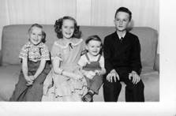
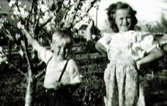
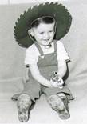
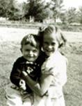
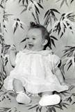
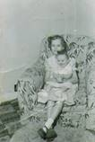
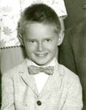

Chapter 8 – SIBLINGS

My brother, Hal, is 18 months older than I. Mom said he was jealous of me practically from the time I was born. She said he tried to tip over my bassinet many times. He was always teasing me and making me cry. Maybe I cried too easily, but as I remember it, he hurt me a lot – both emotionally and physically. Sometimes he would be pulling me around by my hair or doing wrestle holds on me which hurt me. I would be screaming, and Mom would come in to stop him sometimes, (other times, she would just ignore it) but say to me “Stay away from him; you know you always get the worst of it.” I couldn’t keep away from him as he would come where I was. I remember when I was five years old and got my tonsils out; it was done on our kitchen table while we were living in our basement home. Doctor Tanner used to make “home calls” back then. Just before the doctor was to give me the ether, I remember Hal coming in and saying "Ha, Ha, we're going to have cake and ice cream and you can't have any". He was always a tease while we were growing up. I’m sure it wasn’t Hal’s entire fault, however, because I was feisty and would say plenty back to him. One time when he was sitting in the kitchen watching me do the dishes and clean the kitchen and teasing me saying: “Ha Ha, work harder slave, you have to do all the work and I can go play or do whatever I want, but you have to work, work, work, so work harder, Slave.” I got so angry that I told him to “go play then and get out of here”, but he wouldn’t. Another time he was teasing and hurting me, and dad was home and had had enough of Hal’s hurting me and came in and started kicking Hal. I could see that dad was hurting Hal and I was frightened, so I jumped on the back of dad and said, “Dad, stop it, stop it.”
Dad then realized what he was doing and stopped kicking him. He knew he had lost his temper and was out of control. Mom came running in and said “Glen, what are you doing?” From that point on, dad didn’t discipline us children, as he was afraid of losing control again. Mom didn’t like the confrontations either, so tried to ignore us. I’m sure it was hard on both of them to see us fighting. Hal told me sometime later that he felt I had saved his life by stopping dad. I doubt if that would have happened, but he was hurting Hal pretty bad.
I remember another time, about the only time I remember Mom slapping me. We were fighting again and were in the front room. I called Hal a “son of a bitch”. I don’t remember ever swearing or saying that before, but it came out. Mom was in her bedroom and heard me, she came running out, slapped me and said “Don’t ever say that again. I’m not a bitch.” I didn’t.
Bryce: The things I remember about Bryce when he was young, was that he was such a cute little blond boy. He was four years younger than I. The main thing I remember when we were young was that when Hal would tease me, I would go to my big closet in my bedroom and sit on the floor and cry. Bryce would see Hal teasing or hurting me and would feel bad and he knew where I would always go, so he would come in and hug me and tell me he was sorry Hal was mean to me and he tried to comfort me. He was so sweet. However, Georgia tells me that after I was married, Bryce, along with Hal and Terry teased her so much. I wish brothers wouldn’t do that. I think I have mentioned that Mom would want me to take Bryce with me to my friend’s homes when I went to play as when I was 8, 9 or 10 and he was only four, five or six. He was good, so I didn’t mind. Sometimes my friend, Patsy, wished I wouldn’t bring him, but oh well, if I came, so did Bryce. Later, I took Georgia with me. Bryce and Ken’s younger brother, Irven, became good friends and they were glad that Ken and I married each other. Bryce went on a mission to Uruguay, and then was drafted in the army. He was a helicopter repairman. Irven was also in the Army, it was during the Vietnam war. Irven was in the pharmacy. Thank goodness they were not out fighting on the front lines, although Bryce was near as he had to repair the helicopters as they came back. When Bryce came home on leave, he asked me to line him up with the cutest, prettiest, sweetest, smartest and girl with a strong testimony, that I knew. I immediately thought of Deanna Green. She had been in my Mia Maid class and she was my challenge as I knew that she would ask me questions about the lessons, so I had better study it well. She had graduated from high school and I think she was in college. Anyway, we got them together and they hit it off. She is just perfect for Bryce and even though he is a character, he is a good guy, has a strong testimony, is handsome, and we love him.
Terry was a good-looking little guy and he used to like to sit on the couch and bounce his head and upper body, going back and forth. He would do that for the longest time. I wondered if he would hurt himself, but the couch was soft. This is the picture of him sitting on the couch wearing a cowboy hat and holding a toy gun. Terry was a studious boy. He read a lot and was a straight “A” student. Ken & I remember him reading an encyclopedia and asked him why he was doing that. He said he wanted to learn more and this was a good way. Mom & Dad bought an old upright piano and Terry took lessons. He loved the piano and developed his talent on it. You could always tell what kind of mood he was in, by the songs he was playing and how he was playing them. It seemed Terry was either very happy or very unhappy. No one knew until Terry was in High School that he had very poor vision. He was with dad at a basketball game, and a friend called down to him. Terry looked around, but didn’t do anything. This happened a couple more times until dad said: “Terry, why don’t you acknowledge your friend?” Terry said he couldn’t see him. Dad took Terry to the eye doctor soon after, and got him glasses. Terry said he could never see the stars at night or birds in the trees, etc. Since Terry was so tall and big hands, everyone thought he would be great at basketball, but he wasn’t, since he couldn’t see the ball coming until it almost hit him (and it did hit him). Terry was a social person so had several friends and dated cute girls. Terry graduated from Weber College in Journalism. Terry had a list of the qualities he wanted in a wife. After I looked at his list, I said: “Terry, you are a great guy, but you are not perfect, so how do you expect to find this “perfect” wife?” Well, he did find a girl who met all his qualifications, but he had to go to Anchorage, Alaska to find her. He went to Anchorage the summer after he graduated from college to work in the Wonderbread bakery with a friend. There he met Angela. Her dad had been in the military, was retiring and they were moving to Colorado. Angela was working at a JC Penny store in Anchorage. Her parents tried to persuade her to move there with them, and told her that she could get a job with a JC Penny store there, but she told them that she had a strong impression that she was to stay in Anchorage. She met Terry and found out why she was given the impression by the Lord to stay there. After courting a while, they flew down and were married in the Salt Lake Temple. We all thought they would stay and live here in Utah by us, but Terry loved it in Alaska, so they went back. They raised five children there and finally the dark and cold winters were too hard on Angela, so she talked Terry into moving own to Chubbuck, ID where their daughter, Maleah and family live. They moved down in August 2015. We are glad to have them closer to us.
My sister, Georgia, was born in1951 and boy was I excited as I had wanted a sister as long as I could remember. She was a cute little girl. After she was old enough to be in a big bed, she and I slept together. This wasn’t always fun as she would be on my side when I went to bed, so I would slide her over, and during the night her hands and feet would hit me as she moved around. Another thing that wasn’t so fun was when I would leave for school, she would get in my jewelry and makeup and make a mess of it, but it was still worth it to finally have a sister. Georgia said she had trouble with friends as she grew up also. She, too, was sweet and wouldn’t get angry and fight back when friends took advantage of her, she would just go home and cry and feel bad. Georgia was almost 11 years younger than me - so I was married and lived away most of this time when she was having a hard time with friends and with her brothers, as they teased her unmercifully. She said at the dinner table, if she ever said anything, they would make fun of her. I wish I could have been there for her. Ken & I did invite her to stay the weekends with us sometimes. She loved Sandi and would play with her. We enjoyed having her stay with us. .
Kim was in diapers when Ken & I got married. He was a cute little guy. Ken gave him a Tonka Truck for Christmas 1958 when we were engaged.